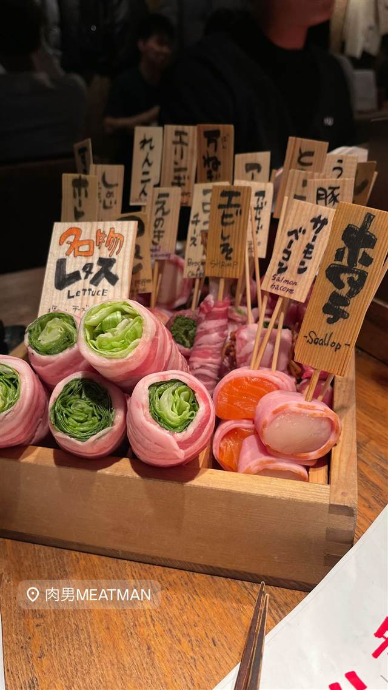

MEAT 肉男 MAN 六本木店（ミートマン）
串打ちから炭火焼きまで見える野菜巻き串が名物
肉男MEATMAN
2010年12月に六本木で開業した焼き鳥・串焼き店。国産豚バラ肉で野菜を巻いた「野菜巻き串」が名物で、カウンター越しに串打ちから焼き上がりまでのライブ感を楽しめる。
TRIVIA
豆知識
- 店名は漢字とローマ字を組み合わせた「MEAT 肉男 MAN」表記
- 運営元は焼き鳥・串焼き業態を複数展開するベイシックス
REVIEWS
世間の評判
3.44食べログ
串焼きの質とレタス巻きの評判
- 串焼きはどれもハズレがなく肉のジューシーさを評価する声が多い
- 名物のレタス巻きは火入れの絶妙さで多くの客から高く評価されている
- スタッフの明るく気配りある接客を評価する声が多く外国人観光客の来店も目立つ
- 予約が取りづらいほど人気で平日でも満席になりやすいという声がある
食べログ 口コミ394件
| 創業 | 2010年12月22日開業 |
|---|---|
| 系譜 | 運営会社は株式会社ベイシックス。姉妹業態に「博多串焼専門店 ジョウモン」「イタリア食堂 赤玉パンチョ」などがある。 |
| 看板 | 野菜巻き串（国産豚バラ肉で野菜を巻いた串）、焼き鳥 |
| こだわり | カウンター越しに素材を串打ちし、炭火で焼き上げるライブ感のあるスタイル。 |
| どこから | 都心 |
| 営業時間 | 月〜木 17:00-23:30 金・土 17:00-05:00 日 17:00-23:30 |
| 予算 | 夜 ¥6,000～¥7,999 |
| 場所 | 六本木 東京都港区六本木 |
| メモ | 六本木の繁華街にあり、仕事帰りに立ち寄りやすい立地・雰囲気。 |
食べたもの：野菜巻き串